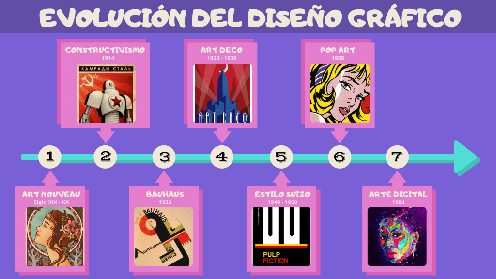

La historia del diseño gráfico
El diseño gráfico es una rama interdisciplinaria del diseño, cuyos fundamentos y objetivos
giran en torno a la definición de problemas y determinación de objetivos para la toma de
decisiones a través de la creatividad, la innovación y el pensamiento lateral junto con
herramientas manuales o digitales, transformándolos para su debida interpretación.
Esta actividad ayuda a la optimización de las comunicaciones gráficas. También es conocido
como diseño de la comunicación visual y diseño visual.
La historia del diseño gráfico y especialmente, los colores y su significado (si es que podemos
afirmar que lo tengan), es una disciplina que está relacionada con casi todo lo que hacemos y que
da movimiento a nuestras ideas. A lo largo de su historia ha vivido numerosos cambios, la mayoría de
ellos propiciados por la situación social o económica de la época y el surgimiento de las vanguardias
y movimientos revolucionarios. Si hacemos un repaso a través de la historia de la humanidad podemos
comprender las distintas etapas de este arte y su influencia en otras artes.
Conocer las raíces de este fascinante mundo de formas y color, puede ser sumamente útil si deseamos
diseñar adecuadamente nuestra imagen de marca, para dotarla de una personalidad acorde a los servicios
que vamos a prestar. Porque, conociendo el pasado y aprendiendo del presente, podremos
prepararnos eficientemente para el futuro.

La definición de la profesión del diseñador gráfico es más bien reciente,
en lo que se refiere a su preparación, su actividad y sus objetivos.
Aunque no existe consenso sobre una fecha exacta en la que nació el diseño
gráfico, algunos lo datan durante el período de entreguerras.
Otros entienden que comienza a identificarse como tal para finales del siglo XIX.
La diversidad de opiniones responde a que algunos consideran como producto del diseño
gráfico a cualquier manifestación gráfica y otros solamente a aquellas que surgen como
resultado de la aplicación de un modelo de producción industrial; es decir, aquellas
manifestaciones visuales que han sido "proyectadas" contemplando necesidades de diversos
tipos: productivas, simbólicas, ergonómicas, contextuales, entre otros.
A lo largo del siglo xx, la tecnología disponible para los diseñadores siguió
avanzando rápidamente, al igual que las posibilidades artísticas y comerciales
del diseño. La profesión se expandió enormemente y los diseñadores gráficos
crearon, entre otras cosas, páginas de revistas, cubiertas de libros, carteles,
carátulas de discos compactos, sellos postales, empaques, marcas, carteles,
anuncios, títulos cinéticos para programas de televisión y películas, y sitios web.
A principios del siglo XXI, el diseño gráfico se había convertido en una profesión
global, a medida que la tecnología y la industria avanzadas se extendían por todo
el mundo.